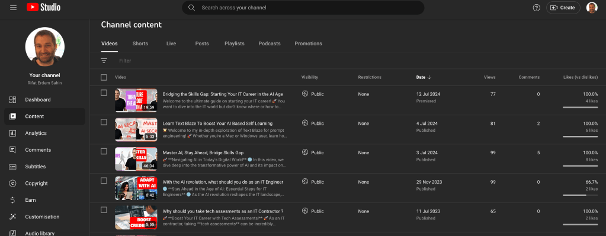

Understanding Key Video Analytics Metrics to Improve Your Content
Hi everyone,
As we gear up for our video review and feedback session this Sunday, it’s essential to have a solid understanding of the key metrics that will guide our discussion. Knowing how to analyze these metrics will help us evaluate our videos' performance, identify areas for improvement, and ultimately create more engaging content for our audience. Here’s a rundown of the four main metrics we'll be focusing on and how you can find them.
1. Impressions
What is it?
Impressions measure how often your video thumbnails are shown to viewers on YouTube or any other video platform. This metric is crucial as it indicates the reach of your video's idea based on the thumbnail and title.
Why is it important?
A high number of impressions means your video is being shown to many people, which is the first step in attracting viewers. It reflects the potential interest in your video based on its presentation.
How to find it?
-
Go to your video analytics dashboard.
-
Select the video you want to review.
-
Navigate to the "Reach" tab or section.
-
You will see the number of impressions displayed.
2. Click Through Rate (CTR)
What is it?
Click Through Rate (CTR) is the percentage of viewers who clicked on your video after seeing the thumbnail. This metric shows how effective your thumbnail and title are in persuading viewers to watch your video.
Why is it important?
A high CTR indicates that your thumbnail and title are compelling and relevant to your audience. It's a critical factor in driving views and engagement.
How to find it?
-
In the same "Reach" tab or section where you found impressions.
-
The CTR metric is usually displayed as a percentage.
3. Average View Duration
What is it?
Average view duration measures the average amount of time viewers spend watching your video. This metric helps you understand how engaging and valuable your content is to your audience.
Why is it important?
A longer average view duration suggests that viewers find your content interesting and are willing to watch it for a longer period, which positively affects your video’s ranking and visibility.
How to find it?
-
Navigate to the "Engagement" tab or section in your analytics dashboard.
-
Look for the "Watch time" details.
-
You will see the average view duration displayed.
4. Hook and Retention Graph
What is it?
The hook and retention graph shows when viewers stop watching your video, highlighting key drop-off points. This visual representation helps you identify which parts of your video retain viewers and which parts might need improvement.
Why is it important?
Understanding viewer retention helps you craft videos that keep your audience engaged from start to finish. By analyzing the drop-off points, you can make adjustments to improve content flow and viewer interest.
How to find it?
-
Stay in the "Engagement" tab or section.
-
Look for the "Audience retention" section.
-
You’ll find a graph that displays viewer retention over the duration of the video, with significant drops often marked.
Conclusion
By focusing on these key metrics—impressions, click-through rate, average view duration, and the hook and retention graph—we can gain valuable insights into our video's performance. This preparation will enable us to have a more productive discussion during our review session, helping us to continuously improve our content and better engage with our audience.
Analysis 3 Aug 2024

Imported from rifaterdemsahin.com · 2024